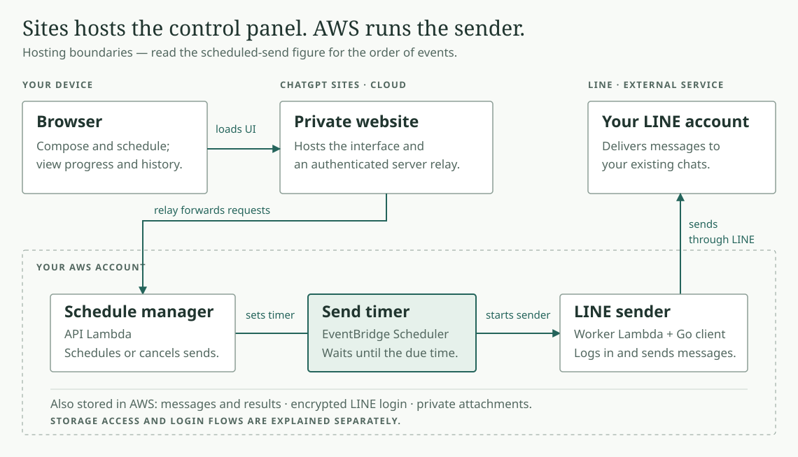
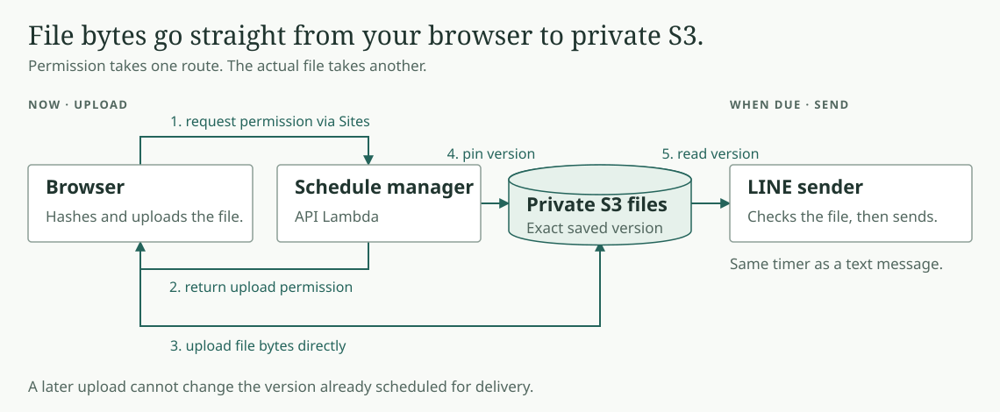

LINE Scheduler · Architecture
Your browser can close.
AWS keeps the schedule.
Follow one example: send “Hello” to your selected LINE chat tomorrow at 9 AM, in your chosen time zone.
- Choose the chat, message, and time in your private Site.
- The schedule manager saves the message in DynamoDB and sets an EventBridge timer.
- Once “Scheduled” is confirmed, close the browser. EventBridge waits; neither Lambda needs to stay running.
- When due, EventBridge starts the LINE sender. It claims the saved send and uses your encrypted LINE login to send.
- The sender saves the result. Reopen the Site to read it through the schedule manager. “Sent” means LINE accepted it.
Hosting
Sites hosts the controls. AWS runs the sender.

GitHub supplies the code at deployment time. Your laptop and GitHub are outside the delivery path.
Separate flows
Login and uploads happen before delivery.
How does LINE login work?
Only the sender can read the session table and decrypt the LINE login. Sites holds neither the saved session nor its key. Login and reconnect use no send timer.
Where do attachments go?

The browser hashes the file; the sender checks size and hash before sending. Text and each attachment are separate LINE messages, each with its own saved send. Their arrival order is not guaranteed. Images arrive as file attachments.
What does “job” mean? Can I cancel or retry?
A job is one saved LINE message with its recipient, due time, and delivery status. “Cancel send” stops a pending message before the sender claims it.
Scheduling has minute-level precision. A send more than 15 minutes late expires. An uncertain result becomes “Check LINE” and is never automatically resent. If the scheduling response is uncertain, refresh history before creating another request.
Source code and full guide
Architecture guide: storage, security, timing, and recovery
Browser composer · Sites relay · Schedule manager and LINE sender · QR login · AWS resources
This walkthrough is an illustration of the normal accepted-schedule path. It does not contact LINE or run a scheduled send.